Peinture murale
Conception numérique de fresques personnalisées, de l'idée à la réalisation peinte directement sur le mur. Coffee shops, bureaux, chambres d'enfant, murs extérieurs — un dessin pensé pour votre espace, qui en devient l'âme.
Illustratrice · Designer · Muraliste
Fresques murales, illustrations, design textile, identité visuelle & packaging —
de l'idée à la réalisation, pour entreprises et particuliers.
Dans la tête de Sol…
…naissent des idées, des couleurs, des personnages…
…qui prennent vie sur vos murs, vos tissus et vos objets.
Fresques murales, design textile, identités visuelles, illustrations et peintures.
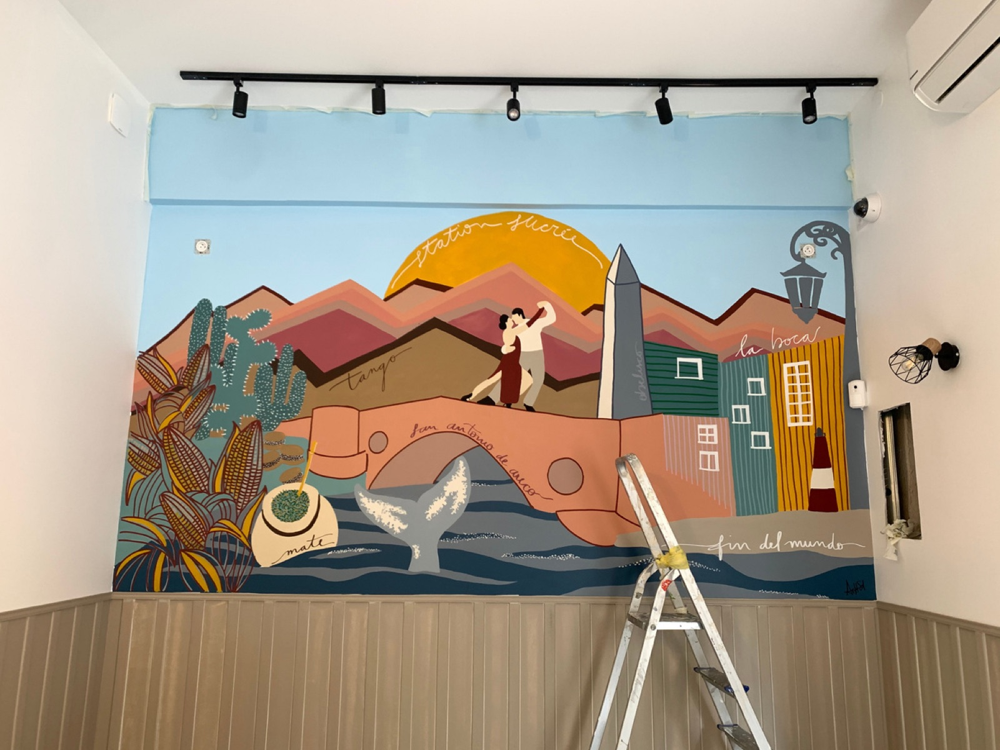
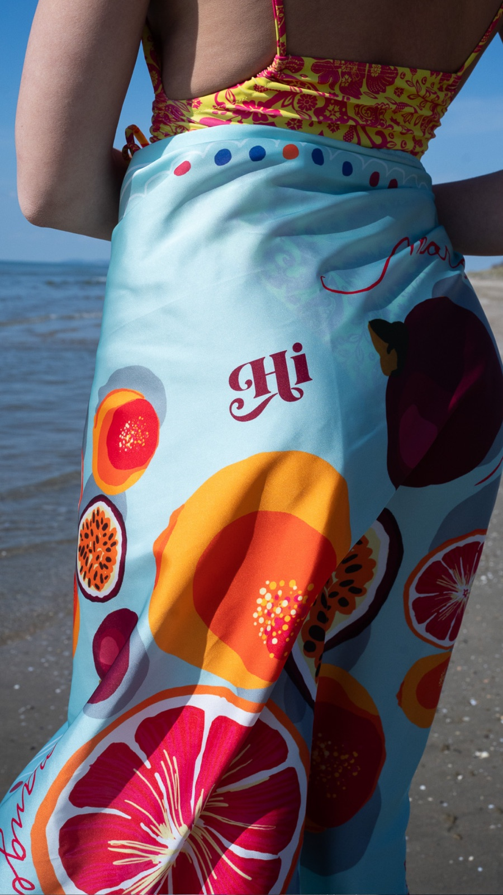
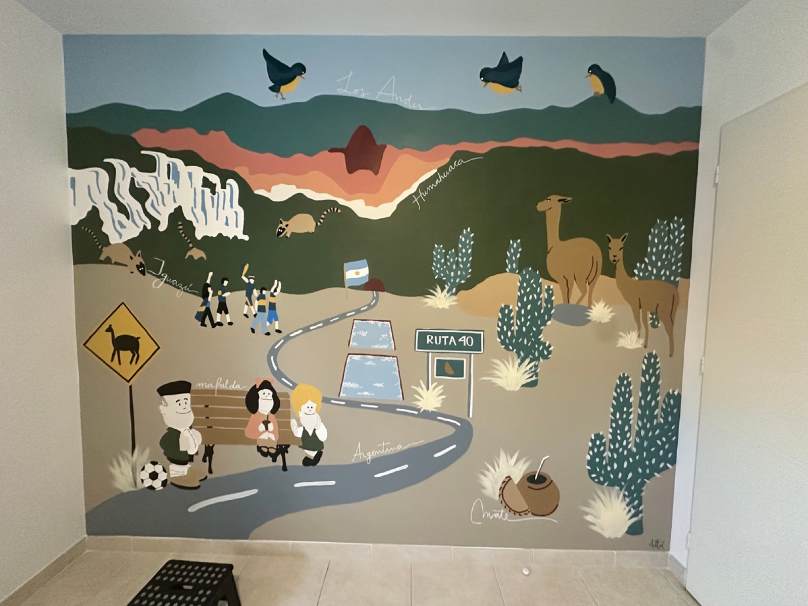
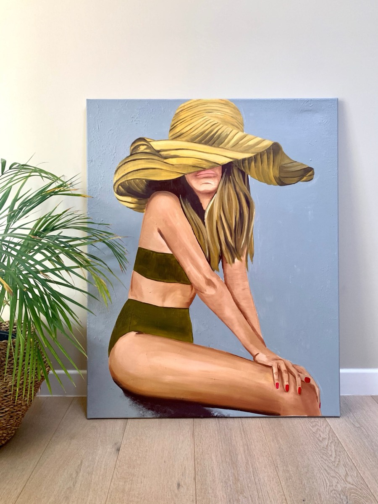
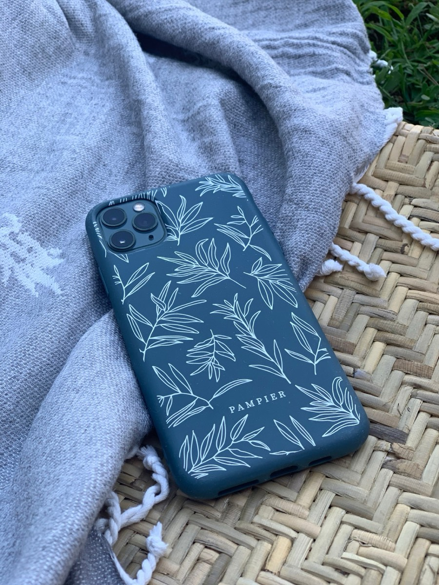
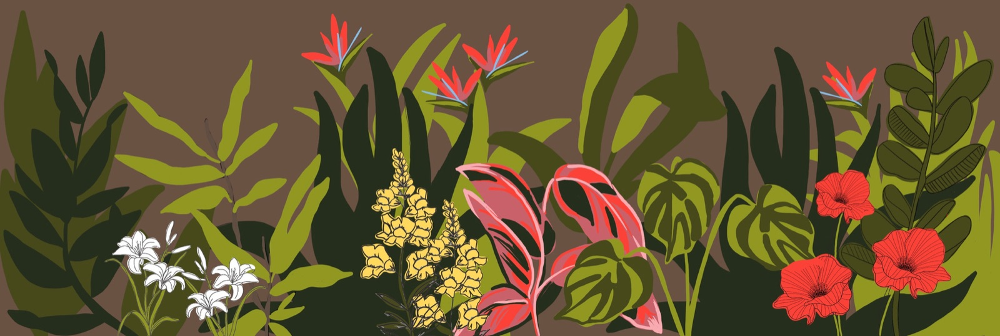
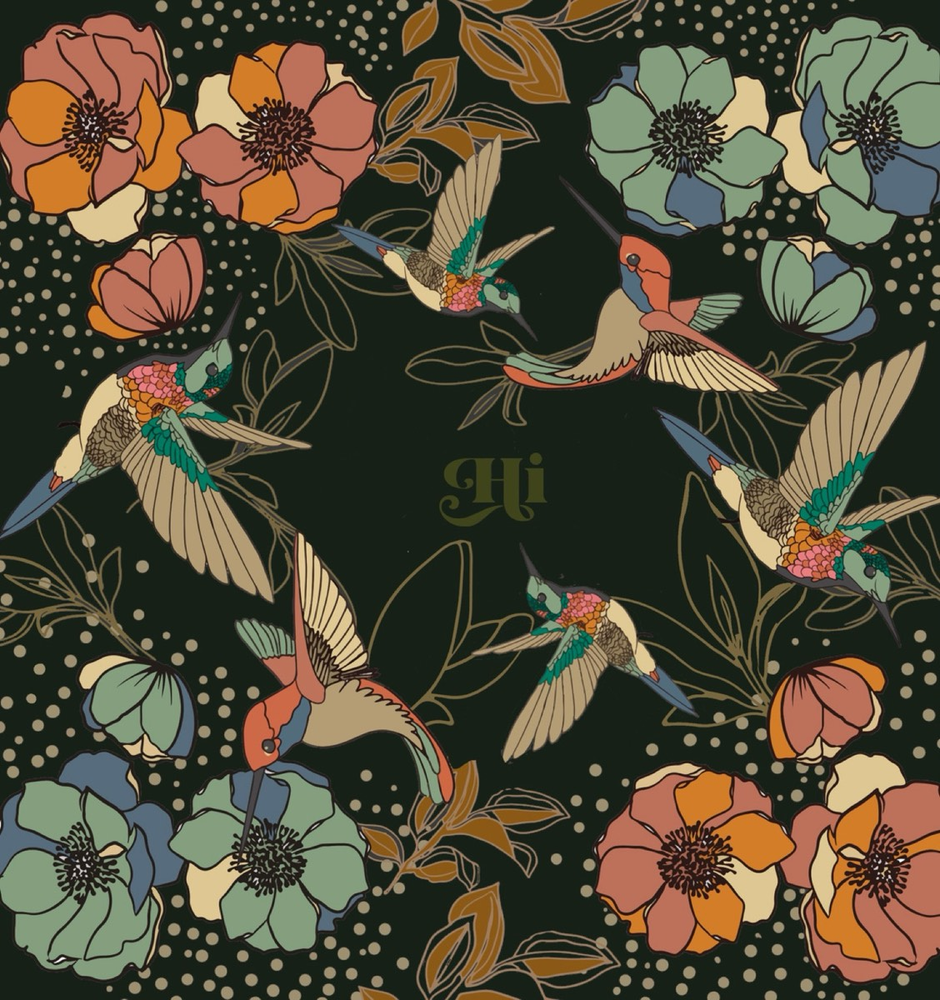
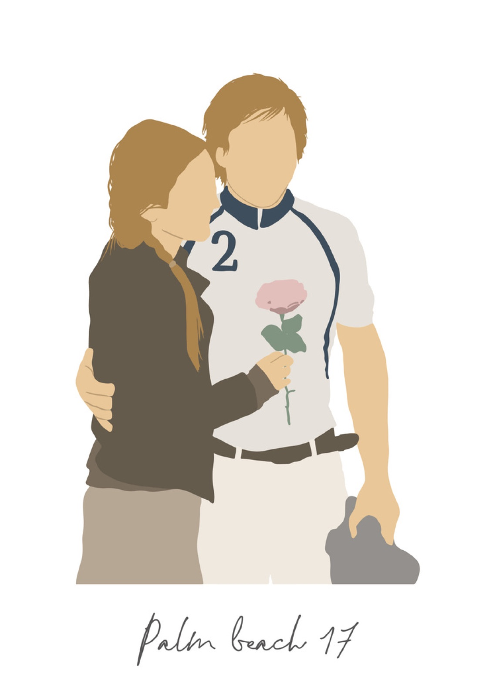
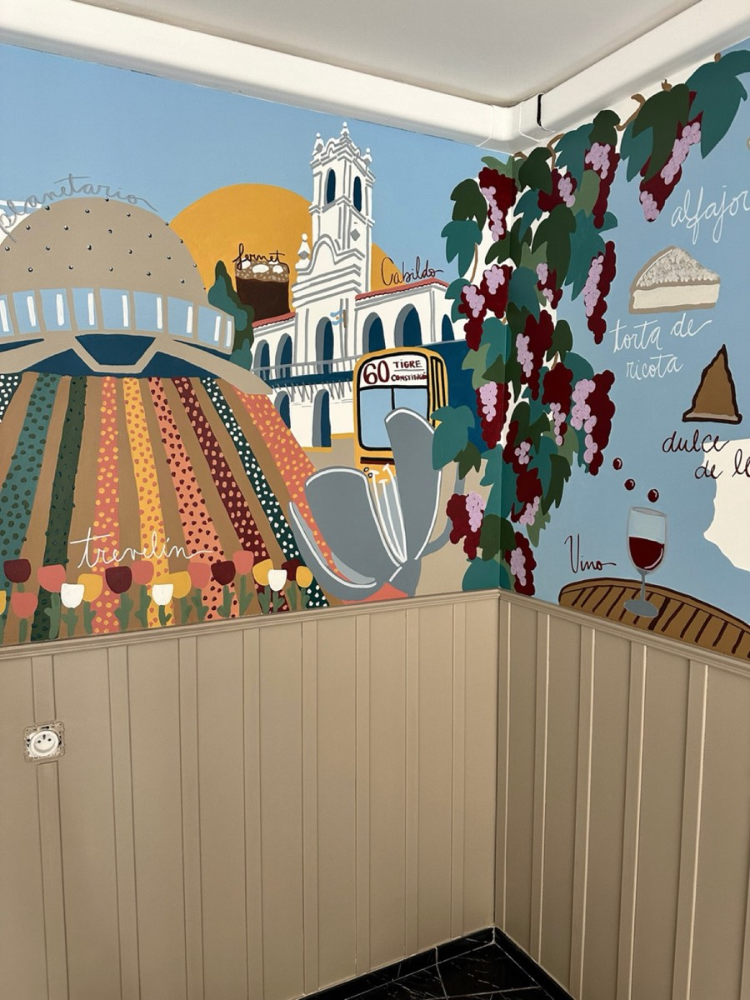
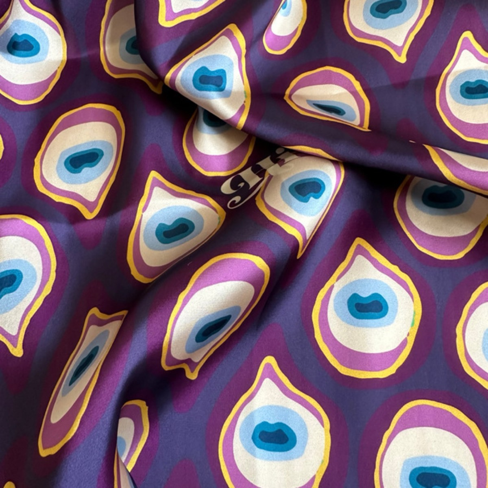
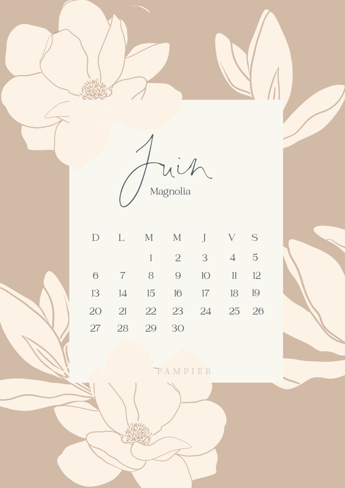
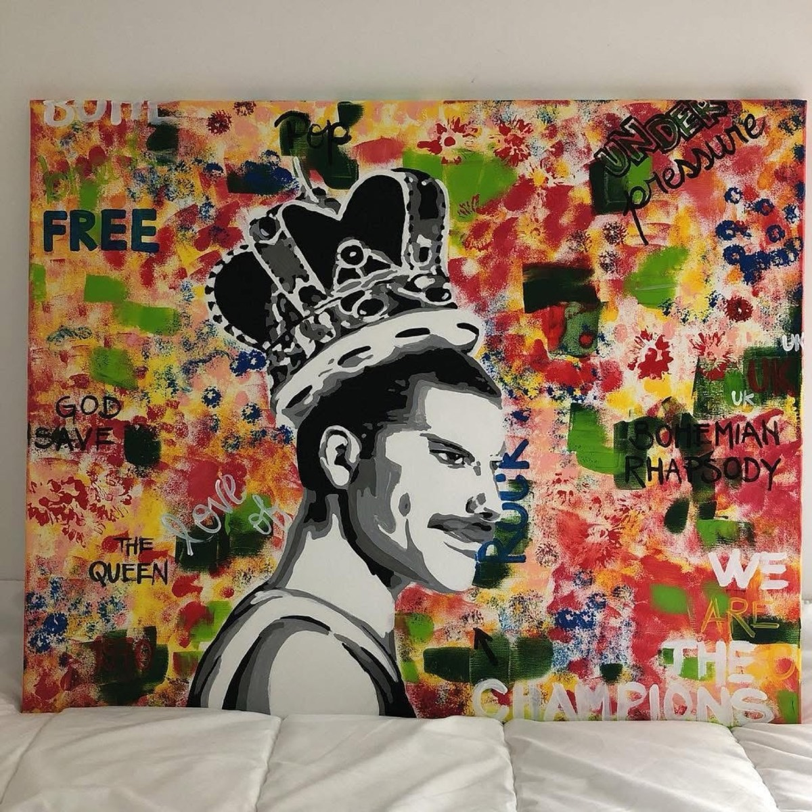
Illustratrice et designer indépendante, je développe depuis plusieurs années mon activité autour de l'illustration, de la peinture et de la création visuelle.
Ma formation initiale en design d'intérieur m'a donné une sensibilité particulière pour les formes, les couleurs, les textures et la composition. Formée également au design textile, j'ai créé pendant plusieurs années des motifs, des patterns et des illustrations destinés au textile.
Aujourd'hui, je mène mes projets en toute indépendance, en explorant différentes techniques et univers graphiques — avec une attention toute particulière portée aux couleurs, aux formes et aux textures.
Conception numérique de fresques personnalisées, de l'idée à la réalisation peinte directement sur le mur. Coffee shops, bureaux, chambres d'enfant, murs extérieurs — un dessin pensé pour votre espace, qui en devient l'âme.
Création de logo, branding, typographie et palette de couleurs, déclinés sur tous vos supports : papeterie, calendriers, affiches, accessoires.
Motifs et illustrations destinés à l'application sur différents supports textiles et digitaux : foulards, paréos, tissus d'ameublement.
Portraits et illustrations sur mesure, peintures et dessins — huile, acrylique, fusain, marqueurs à peinture — pour vos cadeaux et vos intérieurs.
Parlez-moi de votre idée
et de votre espace
Je vous envoie une proposition
et un devis
Croquis validé,
place à la peinture !
Parlez-moi de votre projet — je vous réponds avec une proposition et un devis, sans engagement.
Demander un devis